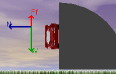

|  |
The following figure is a screen capture of the applet with the angle slider set at 90o. Please adjust the applet now. Set the angle at 90o, the coefficient of friction at 0.50 and leave the radius of turn at 80 m. Note the relationship between the vectors and particularly between the Weight vector and the Frictional Force vector.
|
For the case shown in this figure will the car "stick to the road"?
Now run the applet and adjust the velocity until the car sticks to the road.